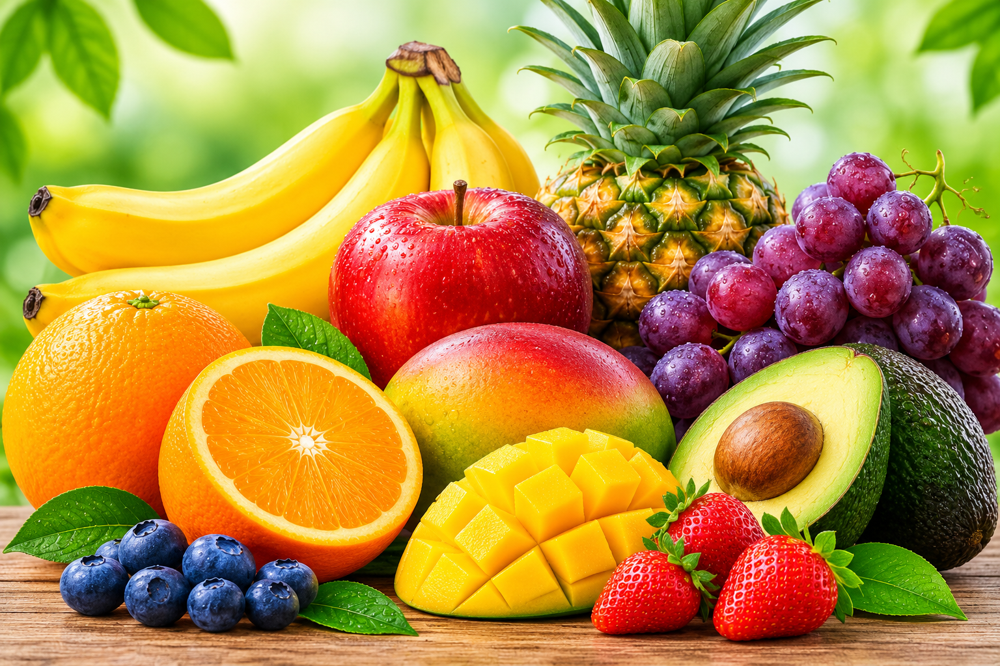
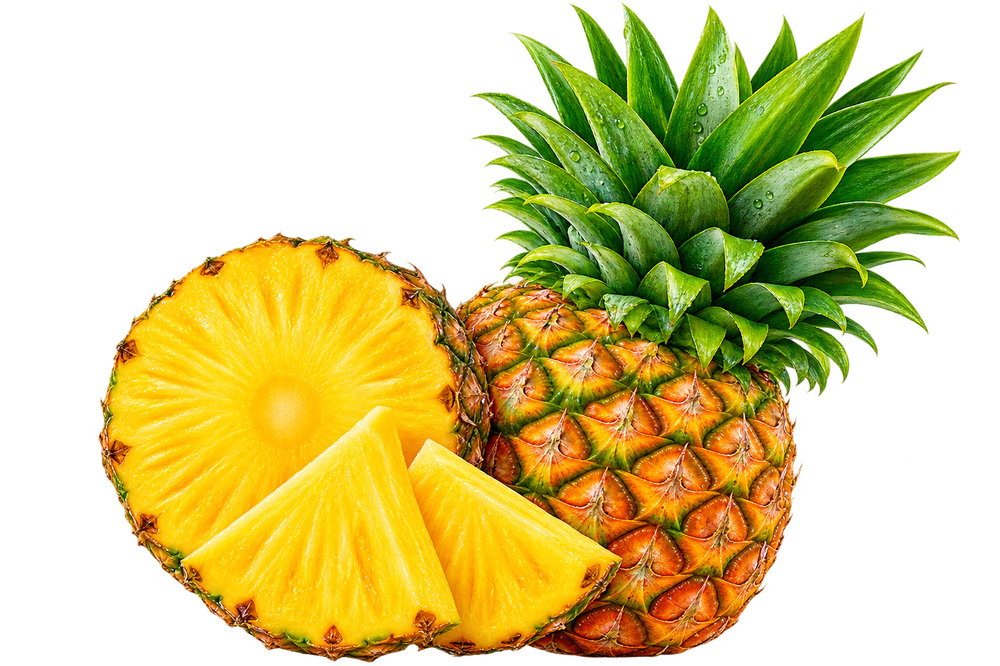
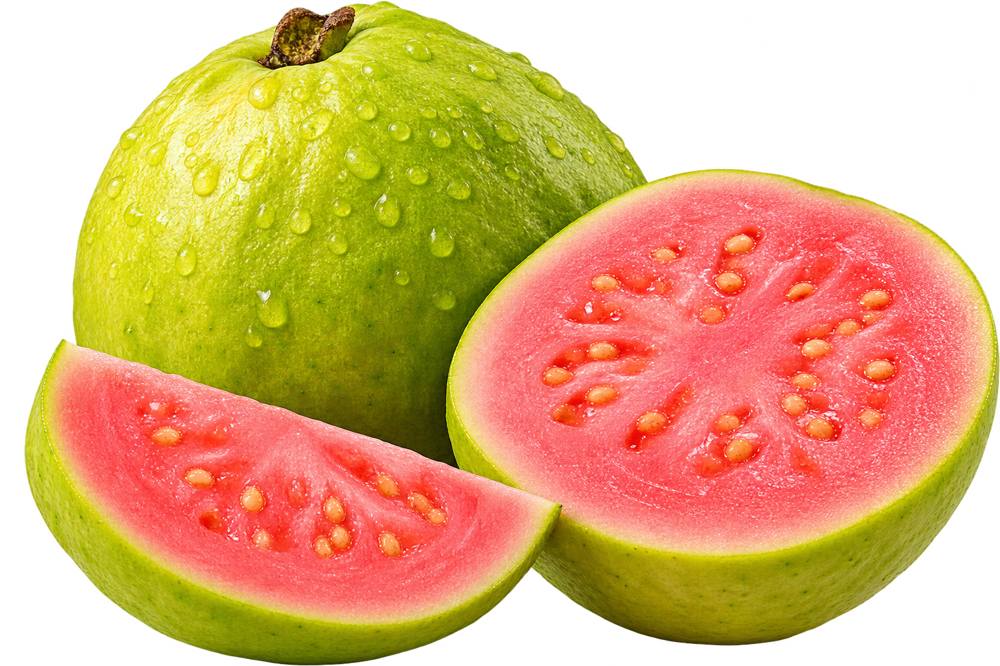
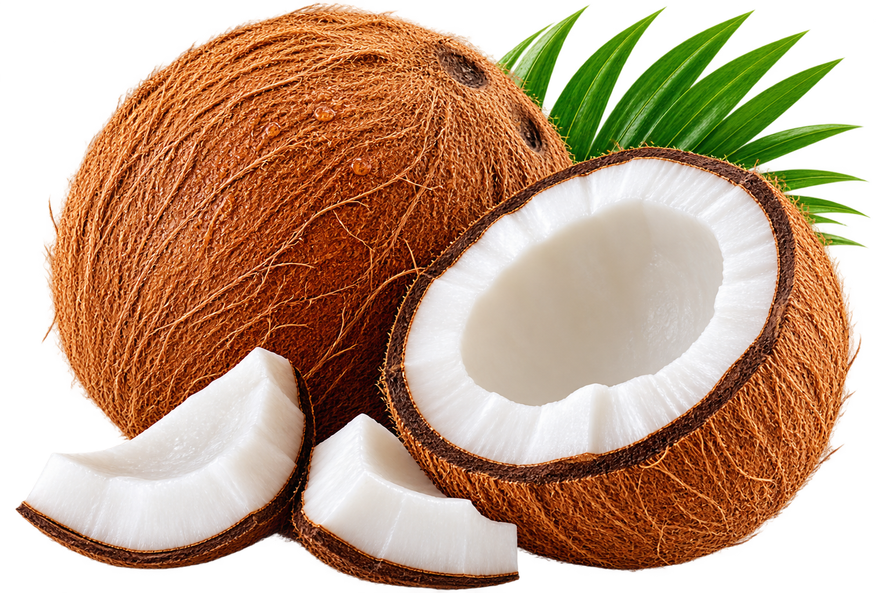
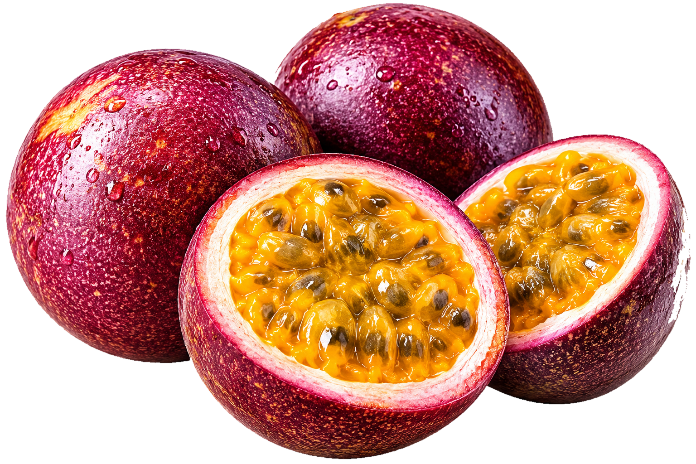

Discover the Power of Fruit Nutrition
Every fruit has something special to offer. Explore the essential vitamins, minerals, fibre and nutrients that make fruits an important part of a balanced diet.
Explore Nutrition →
The Essential Nutrients Found in Fruits
Fruits provide a variety of important nutrients that contribute to the normal functioning of the human body. Let's explore what they offer.
Vitamins
Fruits provide essential vitamins such as vitamin C, vitamin A and several B vitamins. These nutrients support immunity, vision, energy metabolism and other important body functions.
Minerals
Fruits contain important minerals such as potassium and magnesium. These nutrients contribute to normal muscle function, nerve function and maintaining fluid balance in the body.
Dietary Fibre
Dietary fibre is found in many fruits, especially when eaten whole. It supports healthy digestion, helps maintain regular bowel movements and contributes to overall digestive health.
Natural Carbohydrates
Fruits contain natural sugars such as fructose and glucose, which provide energy for the body. They also contain water and fibre, making whole fruits a nutritious source of carbohydrates.
Antioxidants
Many fruits contain antioxidants such as flavonoids and carotenoids. These compounds help protect cells from damage caused by unstable molecules known as free radicals.
Water
Many fruits have high water content, which helps keep the body hydrated. Water also supports temperature regulation, digestion and other essential body functions.
Discover What's Inside Your Favourite Fruits
Every fruit has a unique nutritional profile. Explore the vitamins, minerals, fibre and other nutrients found in our collection of twelve delicious fruits.


Banana
A nutritious fruit containing potassium, vitamin B6, vitamin C and dietary fibre.
Explore Banana →
Orange
A refreshing citrus fruit rich in vitamin C, folate, potassium and dietary fibre.
Explore Orange →
Pineapple
A tropical fruit containing vitamin C, manganese and an enzyme called bromelain.
Explore Pineapple →
Watermelon
A refreshing fruit with high water content, containing vitamin C, vitamin A and lycopene.
Explore Watermelon →

Avocado
A nutrient-rich fruit containing healthy monounsaturated fats, potassium, folate and dietary fibre.
Explore Avocado →
Guava
A tropical fruit especially rich in vitamin C, dietary fibre, potassium and other beneficial nutrients.
Explore Guava →
Coconut
Coconut provides dietary fibre, minerals such as manganese and copper, and fats that contribute to its nutritional value.
Explore Coconut →
Passion Fruit
A flavourful tropical fruit containing dietary fibre, vitamin C, vitamin A and beneficial plant compounds.
Explore Passion Fruit →
Apple
A popular fruit containing dietary fibre, vitamin C and beneficial plant compounds such as polyphenols.
Explore Apple →
Grapes
A naturally sweet fruit containing vitamin K, vitamin C, potassium and beneficial plant compounds.
Explore Grapes →Compare the Nutritional Values
Explore and compare the nutritional composition of our twelve fruits. Discover how their calories, fibre, carbohydrates and other nutrients differ.
Why Fruit Nutrients Matter to Your Body
The nutrients found in fruits support several important functions in the body. Including different fruits in your diet can help you maintain a balanced eating pattern.
Supports Normal Immune Function
Vitamins such as vitamin C help support the normal functioning of your immune system.
Helps Provide Energy
Fruits contain natural carbohydrates that provide energy for everyday activities.
Supports Digestive Health
Dietary fibre in fruits helps support healthy digestion and regular bowel movements.
Supports Heart Health
Fruits provide nutrients such as potassium and fibre, which can contribute to maintaining good heart health.
Helps Maintain Hydration
Many fruits contain a high amount of water, helping contribute to your body's daily fluid needs.
Provides Protective Plant Compounds
Fruits contain antioxidants and other plant compounds that help protect cells from oxidative damage.
Simple Ways to Enjoy Fruits Every Day
Enjoying a variety of fruits is a simple way to add important nutrients to your everyday meals.
Eat a Variety of Fruits
Choose different fruits throughout the week to enjoy a wider range of vitamins, minerals and other nutrients.
Choose Fresh Whole Fruits
Enjoy whole fruits regularly. They provide fibre and are often more filling than fruit juice.
Wash Fruits Before Eating
Rinse fresh fruits under clean running water before eating or preparing them.
Add Fruits to Your Meals
Add fruits to breakfast, snacks or salads to make your meals more varied and enjoyable.
Store Fruits Properly
Store fruits appropriately to help maintain their freshness and reduce food waste.